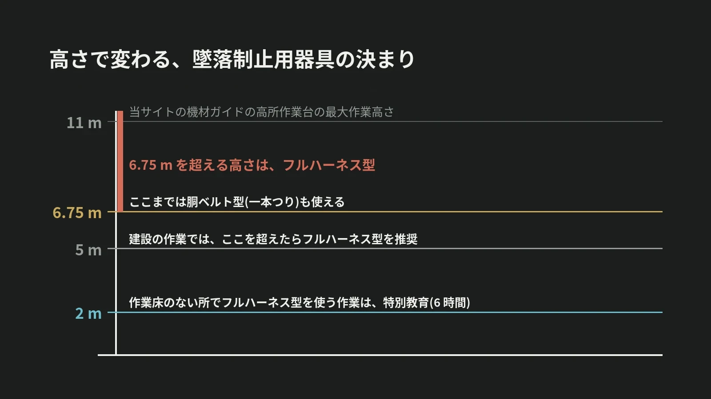

LOTUS VISUAL JOURNAL / 現場の裏側 #30
「安全帯」は、いまは
「墜落制止用器具」。
フルハーネスと、6.75 m という数字
結論から。高い所の作業で体をつなぐ器具は、2019 年 2 月から「墜落制止用器具」という名前になり、フルハーネス型が原則になりました。
胴に巻くベルトの型(一本つり)を使えるのは、高さ 6.75 m 以下の場所です。
01 / THE NAME名前が変わり、中身も変わった
厚生労働省の資料によると、2019 年 2 月 1 日から、「安全帯」の名前は「墜落制止用器具」に改められました。
変わったのは名前だけではありません。柱に回して体を支える「U 字つり」の胴ベルトは、墜落制止用器具に含まれなくなりました。墜落を止める器具としては使えません。古い規格の安全帯を使えたのは、2022 年 1 月 1 日まででした。
02 / FULL HARNESS原則は、フルハーネス型
同じ資料は、墜落制止用器具は原則としてフルハーネス型、としています。
例外があります。フルハーネス型を着けた人が、落ちたときに地面に届いてしまうおそれのある場合(高さ 6.75 m 以下)は、胴ベルト型(一本つり)を使えます。建設の作業では、5 m を超える箇所でフルハーネス型の使用が推奨されています。
03 / TRAINING2 m から、教わってから
器具を用意すれば終わり、ではありません。高さが 2 m 以上で、作業床を設けることが難しい場所。そこでフルハーネス型を使って行う作業は、特別教育の対象です。
特別教育は、学科が 4.5 時間、実技が 1.5 時間。合わせて 6 時間です。使う人が教わっていることまでが、決まりに入っています。
04 / EVENT HEIGHTS催しの現場の高さ
映像の現場にも、高い所の作業があります。LED の画面を吊る。照明やケーブルを、天井の近くで扱う。
当サイトの機材ガイドに載せている高所作業台は、最大作業高さが 11.00 m(メーカー掲載値)です。6.75 m の線を超える高さです。どの器具を使い、どこにつなぐかは、作業の方法、機材の取扱説明書、会場の決まりで決まります。
05 / ON SITELOTUS VISUAL へのご相談では
LOTUS VISUAL へのご相談では
高い所の作業があるご相談では、3 つを会場の担当の方と事前に確認させてください。作業の高さ。足もとが作業台か、作業床のない場所か。器具をつなぐ先はどこか。
当日は、器具の規格と点検、つなぐ先を確かめてから上がります。確認の済んでいない高さには、上がりません。
06 / TAKEAWAY今日の持ち帰り
今日の持ち帰り
- 「安全帯」は、いまは「墜落制止用器具」。原則はフルハーネス型。U 字つりの胴ベルトは含まれない。
- 胴ベルト型(一本つり)を使えるのは、6.75 m 以下。建設の作業では、5 m を超えたらフルハーネス型が推奨。
- 2 m 以上で作業床のない場所は、教わってから。フルハーネス型を使う作業の特別教育は、合わせて 6 時間。
出典:厚生労働省・都道府県労働局・労働基準監督署「安全帯が『墜落制止用器具』に変わります!」(平成 31 年 1 月。名称、フルハーネス型の原則、6.75 m と 5 m、特別教育の時間、施行日と古い規格の期限)。高所作業台の高さは、当サイトの機材ガイドに載せているメーカー掲載値です。